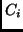
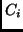
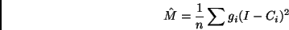

Next: Principal Hessian direction
Up: Methods available
Previous: Sliced inverse regression
Sliced average variance estimation, or save, was proposed by Cook and
Weisberg (1991). As with sir, we slice the range of  into
into  slices,
but rather than compute the within-slice mean we compute within-slice
covariance matrices. If  is the weighted within slice sample covariance
matrix in slice
slices,
but rather than compute the within-slice mean we compute within-slice
covariance matrices. If  is the weighted within slice sample covariance
matrix in slice  ,
then the matrix
,
then the matrix  is given by
is given by

where  is the sum of the weights in the slice; if all weights are
equal, then the are just the number of observations in each slice.
save looks at
second moment information and may miss first-moment information,
particularly it may miss linear trends.
Output for save is similar to sir, except that no asymptotic tests have
been developed. However, tests of dimension based on a permutation test are
available; see Section 4.
is the sum of the weights in the slice; if all weights are
equal, then the are just the number of observations in each slice.
save looks at
second moment information and may miss first-moment information,
particularly it may miss linear trends.
Output for save is similar to sir, except that no asymptotic tests have
been developed. However, tests of dimension based on a permutation test are
available; see Section 4.
Sandy Weisberg
2002-01-10